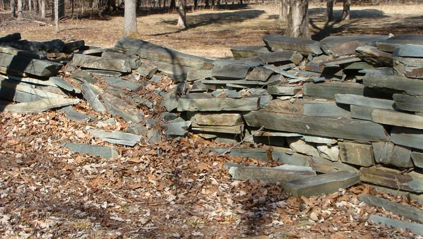

posted: 4/14/2014
Entrance Wall Improvements
VOLUNTEERS NEEDED AS FRIENDS OF MORROW MOUNTAIN PLAN IMPROVEMENTS TO WALL AND RAILINGS AT PARK ENTRANCE
With enthusiastic support from approximately 140 current members, our mission is to support and promote Morrow Mountain State Park for the benefit of the general public. In keeping with the mission, Friends of Morrow Mountain State Park (FMMSP) has made it a priority to listen to what the community considers important to one of Stanly County's most valuable resources. Over the past couple of years, two comments consistently surfaced. Many wished for a more open view from the top of the mountain, and others noted that the stone wall at the park entrance was in serious need of repair. While leaving much devastation and months of constant clean-up for park officials, the June, 2013 storm took out many trees on the mountaintop, providing all who now visit with a spectacular view. If you haven't been to the top of Morrow Mountain lately, we encourage you to drive up and take a look. As for the badly deteriorated wall, the organization, in cooperation with park officials, determined that with an average of 400,000 park visitors each year, improvements were desperately needed and would greatly enhance the entrance.
The original dry-stacked wall, constructed of native argillite mined at the park, was built in 1940 by the Civilian Conservation Corp. Keeping the historical significance of park structures in mind, plans are underway to disassemble and re-use the original stone, with end results as similar as possible to the original wall. New cedar fence rails must be split and laid as well. The cost of this project is estimated at $12,000.
FMMSP Chair, Vanessa Mullinix, stated, "Financial support from the community has been a huge help in offsetting the cost, but volunteer labor is still badly needed". A skilled stone mason has agreed to supervise and assist in the construction, and volunteer labor will be utilized in all stages of the project. The proposed plan is to begin renovation in May and complete the project by this fall. If you are interested in volunteering, please call the park office at (704) 982-4402 Monday-Friday from 9:00 am - 5:00 p.m. Your name and contact information will be added to a volunteer list. Each volunteer will be notified to determine availability to assist as the project gets underway. Certain phases of the reconstruction will require volunteers capable of lifting heavy stone.
The next FMMSP meeting is scheduled for May 4, 2014 at 3:00 p.m. at the Morrow Mountain State Park Lodge. We encourage all members and volunteers to attend this meeting to learn more about upcoming events and projects. Each year the park attracts thousands of visitors to Stanly County, and is vital in promoting economic development efforts for our area. Become a Friend of Morrow Mountain and join us with this project and many more in the future.
Annual membership is $10.00/person. Tax-exempt membership dues or contributions for this project may be mailed to the address below. Interested individuals can also join at the May 4th meeting. Additional information and latest updates may be obtained at www.morrowmountain.org
FRIENDS OF MORROW MOUNTAIN STATE PARK P.O. Box 306 Badin, North Carolina 28009 (Please include your name and address so a receipt can be mailed to you)
To Volunteer Call: (704) 982-4402 M-F 8:00 a.m. - 5:00 p.m.
Submitted by:
Tanya Davis, Secretary
Friends of Morrow Mountain State Park
Tanya Davis, Secretary
Friends of Morrow Mountain State Park